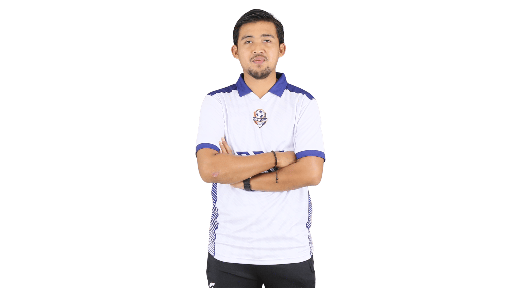
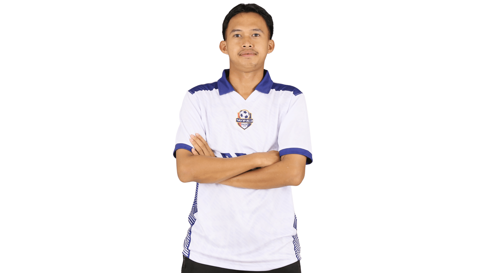
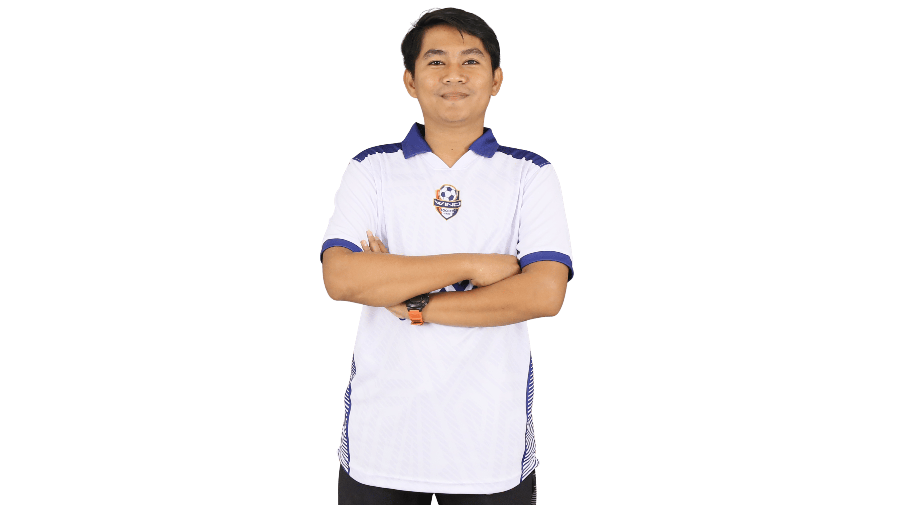
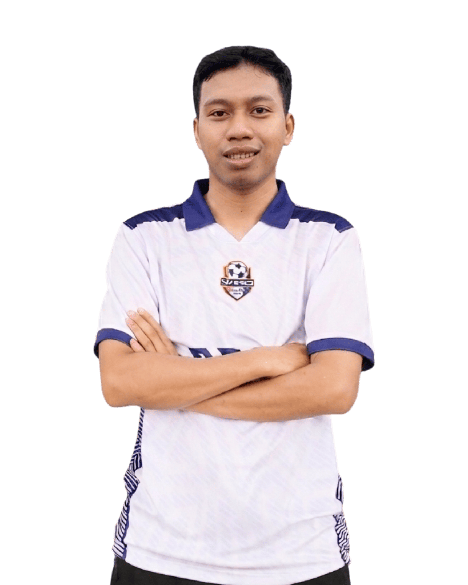
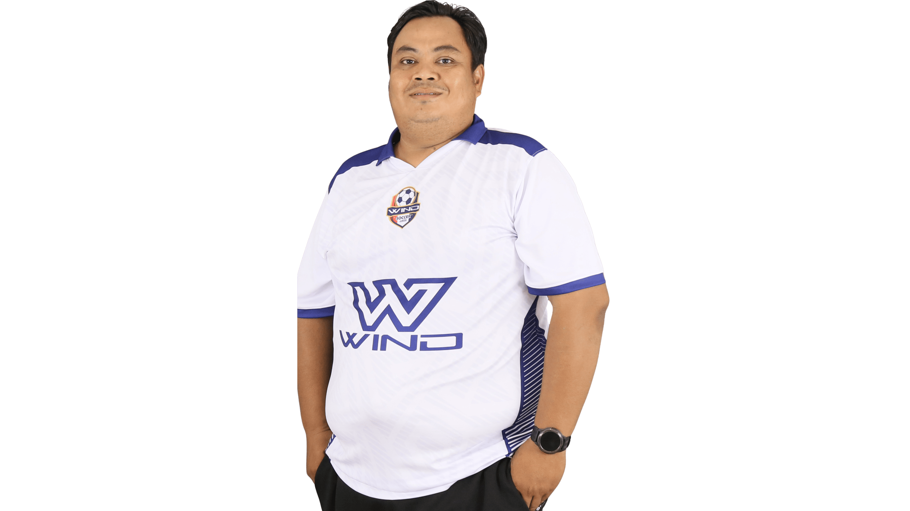
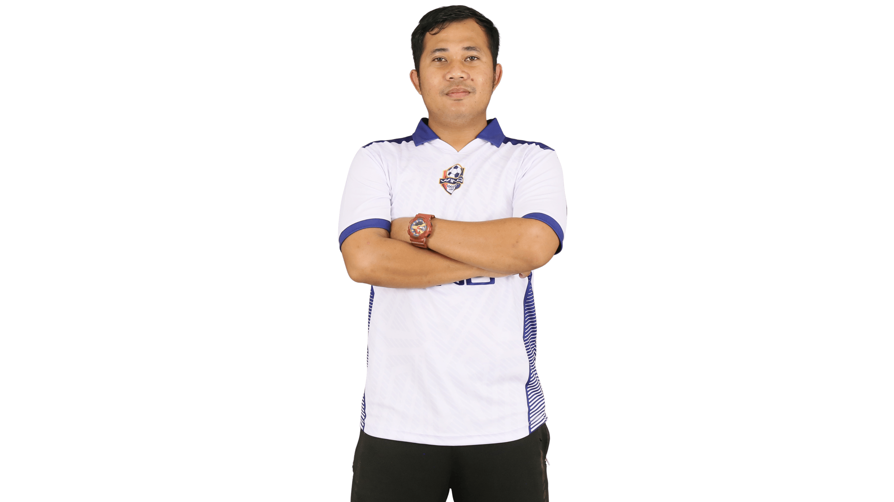
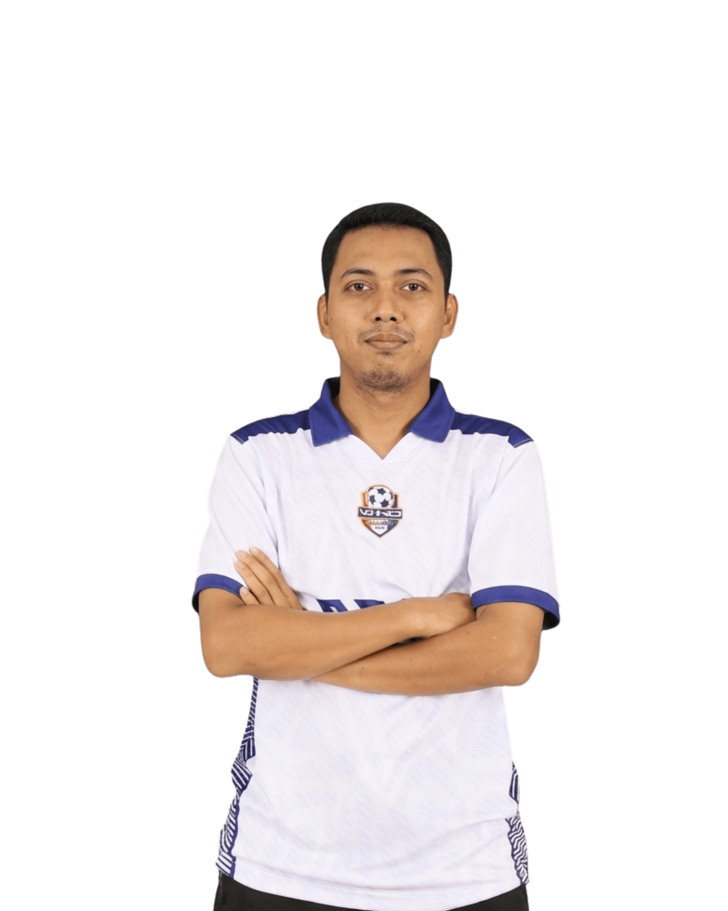

Direktur Teknik
Lisensi C AFC
Head Coach KU-8
Mantan Pemain Persikota
Head Coach KU-10
Staf Kepelatihan
Head Coach KU-12
Staf Kepelatihan
Head Coach KU-14
Lisensi D
Goalkeeper Coach
Lisensi D
Pelatih Isolasi
Lisensi D